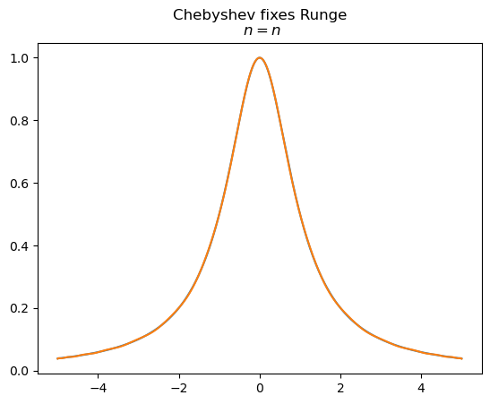

Week 7 — Function Approximation — Additional Examples#
Programming and Numerical Methods for Economics (ECNM10115) · The University of Edinburgh
Companion examples to the Week 7 main notebook.
How to work through this notebook: run every cell in order (
Shift+Enter). When you reach a result, pause and predict it before running — that habit is what turns reading into learning. Experiment: change parameters, break things, re-run.
Programing and Numerical Methods in Economics#
Function Approximation#
# Import necessary libraries
import numpy as np
import matplotlib.pyplot as plt
def vandermonde(X):
n = len(X)
V = np.array([[xi**s for s in range(n)] for xi in X])
return V
def lagrange(X, y):
V = vandermonde(X)
return np.linalg.solve(V, y)
def evaluate(a, x):
xi = 1
v = 0.0
for ai in a:
v += ai * xi
xi *= x
return v
# Plotting
plt.figure()
x = np.linspace(0, 2 * np.pi, 50)
plt.plot(x, np.sin(x), marker='o', label=r'$\sin(x)$')
for n in (5, 7, 9):
X = np.linspace(0, 2 * np.pi, n)
y = np.sin(X)
a = lagrange(X, y)
x_fine = np.linspace(0, 2 * np.pi, 100)
plt.plot(x_fine, [evaluate(a, x_val) for x_val in x_fine], label=f"$n = {n}$")
plt.legend()
plt.show()

xg = np.linspace(-5, 5, 1000)
f = lambda x: 1 / (1 + x**2)
plt.figure()
# plt.plot(xg, f(xg), label=r"$f(x) = 1/(1 + x^2)$", title='Runge Phenomenon')
plt.plot(xg, f(xg),label=r'$\sin(x)$')
plt.title('Runge Phenomenon')
for n in range(4, 12):
X = np.linspace(-5, 5, n)
y = f(X)
a = lagrange(X, y)
plt.plot(xg, [evaluate(a, x_val) for x_val in xg], label=f"$n = {n}$")
plt.legend('bottom')
plt.show()

def T(n, x):
return np.cos(n * np.arccos(x))
plt.title("Chebyshev Polynomials")
for i in range(5):
plt.plot(np.linspace(-1, 1, 100), T(i, x), label=f"$T_{i}(x)$")
plt.show()
C:\Users\jzurita\AppData\Local\Temp\ipykernel_29536\2212560740.py:2: RuntimeWarning: invalid value encountered in arccos
return np.cos(2*n * np.arccos(x))
---------------------------------------------------------------------------
ValueError Traceback (most recent call last)
Cell In[52], line 7
4 plt.title("Chebyshev Polynomials")
6 for i in range(5):
----> 7 plt.plot(np.linspace(-1, 1, 100), T(i, x), label=f"$T_{i}(x)$")
9 plt.show()
File ~\.julia\conda\3\x86_64\Lib\site-packages\matplotlib\pyplot.py:3827, in plot(scalex, scaley, data, *args, **kwargs)
3819 @_copy_docstring_and_deprecators(Axes.plot)
3820 def plot(
3821 *args: float | ArrayLike | str,
(...)
3825 **kwargs,
3826 ) -> list[Line2D]:
-> 3827 return gca().plot(
3828 *args,
3829 scalex=scalex,
3830 scaley=scaley,
3831 **({"data": data} if data is not None else {}),
3832 **kwargs,
3833 )
File ~\.julia\conda\3\x86_64\Lib\site-packages\matplotlib\axes\_axes.py:1777, in Axes.plot(self, scalex, scaley, data, *args, **kwargs)
1534 """
1535 Plot y versus x as lines and/or markers.
1536
(...)
1774 (``'green'``) or hex strings (``'#008000'``).
1775 """
1776 kwargs = cbook.normalize_kwargs(kwargs, mlines.Line2D)
-> 1777 lines = [*self._get_lines(self, *args, data=data, **kwargs)]
1778 for line in lines:
1779 self.add_line(line)
File ~\.julia\conda\3\x86_64\Lib\site-packages\matplotlib\axes\_base.py:297, in _process_plot_var_args.__call__(self, axes, data, return_kwargs, *args, **kwargs)
295 this += args[0],
296 args = args[1:]
--> 297 yield from self._plot_args(
298 axes, this, kwargs, ambiguous_fmt_datakey=ambiguous_fmt_datakey,
299 return_kwargs=return_kwargs
300 )
File ~\.julia\conda\3\x86_64\Lib\site-packages\matplotlib\axes\_base.py:494, in _process_plot_var_args._plot_args(self, axes, tup, kwargs, return_kwargs, ambiguous_fmt_datakey)
491 axes.yaxis.update_units(y)
493 if x.shape[0] != y.shape[0]:
--> 494 raise ValueError(f"x and y must have same first dimension, but "
495 f"have shapes {x.shape} and {y.shape}")
496 if x.ndim > 2 or y.ndim > 2:
497 raise ValueError(f"x and y can be no greater than 2D, but have "
498 f"shapes {x.shape} and {y.shape}")
ValueError: x and y must have same first dimension, but have shapes (100,) and (20,)

a, b, f = -5, 5, lambda x: 1 / (1 + x**2)
n = 30
m = n + 1
z = [-np.cos((2 * k - 1) / (2 * m) * np.pi) for k in range(1, m + 1)] # interpolation points
x = (np.array(z) + 1) * (b - a) / 2 + a
y = f(x)
c = []
for i in range(m + 1):
numerator = sum(y[k] * T(i, z[k]) for k in range(m))
denominator = sum(T(i, z[k])**2 for k in range(m))
c.append(numerator / denominator)
def f_hat(x):
return sum(ci * T(i, 2 * (x - a) / (b - a) - 1) for ci, i in zip(c, range(n + 1)))
xg = np.linspace(-5, 5, 1000)
# plt.figure(figsize=(8, 6), title="Chebyshev fixes Runge\n $n = {n}$")
# plt.figsize(8, 6)
plt.title("Chebyshev fixes Runge\n $n = {n}$")
plt.plot(xg, f(xg), label=r"$f(x) = 1/(1+x^2)$")
plt.plot(xg, f_hat(xg), label=r"$\hat f(x)$")
plt.show()

from scipy.interpolate import CubicSpline
f = lambda x: 1 / (1 + x**2)
a, b, n = -5, 5, 20
x = np.linspace(a, b, n)
y = f(x)
f_hat = CubicSpline(x, y)
# Plot the results
plt.title("Cubic Splines")
xg = np.linspace(a, b, 1000)
plt.plot(xg, f(xg), label=r"$f(x) = 1/(1+x^2)$")
plt.plot(xg, f_hat(xg), label=f"$\\hat{{f}}: n = {n}$")
plt.show()

Back to the course page.